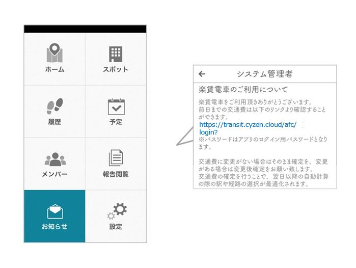
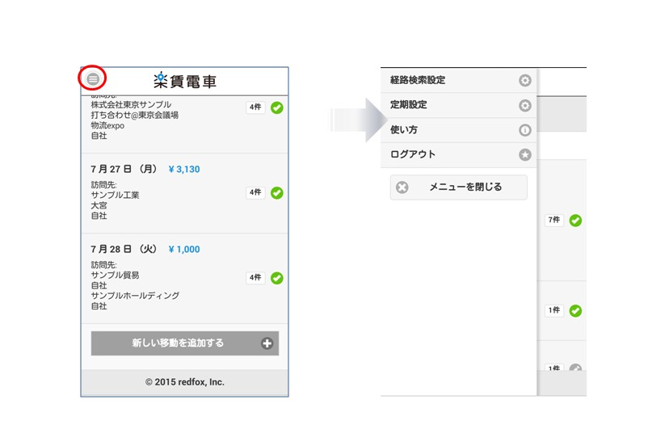
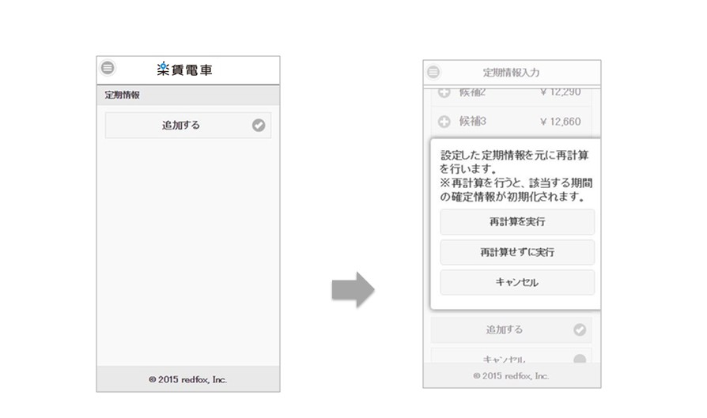

3．ユーザーの操作方法¶
3-1. 使用を始める¶
- アプリのインストール
- ストアからアプリをインストールします。
- アプリ側からのユーザー登録を完了させる
- 管理者から受け取った登録情報で、ユーザー登録を完了させます。2通りの方法があります。
| 方法 | ケース | 手順 |
| 【方法1】 | 管理者から「グループID」を受け取った場合 | アプリの「設定」で、グループIDと一緒に自分の「名前」「パスワード」入力して「ユーザー登録」と「ログイン」を同時に完了させます。 |
| 【方法2】 | 管理者から「ユーザーログインID」と「パスワード」を受け取った場合 | アプリの「設定」で上記の情報を入力してログインを完了させます。 |
【方法1】管理者から「グループID」を受け取った場合
アプリの「グループに参加」から設定します。 ①自分の名前、パスワードを設定し、②にグループIDを入力、③次へをタップすると 次の画面で「ユーザーID 」が発行されます。
注釈
端末を更新するときなどに、このユーザーIDとパスワードが必要なので、必ず控えて保存してください。
重要
ユーザーIDとパスワードは保管しましょう！交通費自動計算のログインでも必要になります。 もしパスワードを忘れたら、管理者側から再設定できます。
【方法2】管理者から「ユーザーID」と「パスワード」を受け取った場合
アプリの「ログイン」から設定します。 受け取った「ユーザーID」と「パスワード」を入力すると、ログインが完了します。
注釈
端末を更新するときにも、このユーザーIDとパスワードが必要なので、必ず控えて保存してください。
重要
上記の「ユーザーIDとパスワードでログイン」という方法は、「新しい端末でデータを引き継ぐ」ときも同様です。

- スマートフォンの設定
- 交通費自動計算はスマートフォンの位置情報取得機能を使います。そのためのスマホの設定をします。 端末によって設定方法が違います。以下を参考に設定してください。
iOS¶
GPS設定を有効にします。
- 「設定」＞「プライバシー」＞「位置情報サービス」をONにする
- 設定 > アプリ内のGPS Punch!の位置情報を常に許可、通知を許可、モバイデータ通信をオンにする
- [iOS7以降の場合]端末の「設定」＞「GPS Punch!」＞「Appのバックグラウンド更新」をONにする

Android¶
GPS設定を有効にします。
- （OS4.4以降） 端末の「設定」＞「位置情報」をON、さらに「位置情報モード」で「高精度」を選択
- （OS4.3以前） 端末の「設定」＞「位置情報アクセス」＞「位置情報にアクセス」をONに、さらに「GPS機能」「Wi-Fi/モバイル接続時の位置情報」にチェックを入れる
重要
使用を始める前に、スマートフォンの位置情報設定ONを確認！
3-2. 交通費自動計算システムを使う¶
- 初回起動
「アプリのユーザーログイン」「スマホの設定」ができたら、準備完了です。
初回の起動のとき、「位置情報を取得しますが、よろしいですか？」など、いくつかの確認のダイアログボックスが表示されます。 すべて「許可」にしてください。

打刻
「交通費自動計算システムを使いはじめるときは、毎日、アプリの「交通費記録を開始」を押します。あとは何も操作はありません。アプリを携帯して移動するだけです。
1日の仕事が終わったら、「交通費記録を停止」を押します。このあとの移動は記録されません。
重要
「記録開始」を忘れないことも大事ですが、「記録停止」をすることも忘れないようにしましょう！

3-3. 前日までの交通費を確認する¶
- 確認画面への移動方法
アプリで交通費記録を開始すると、メッセージが自動で届きます。 アプリのメニュー > お知らせ に記載されているメッセージ内のURLをタップすると、ウェブブラウザが開き、 「交通費自動計算」のページに飛び、ログイン画面になります。
- 確認画面へのログイン
ログインIDはあらかじめ入力済みです。アプリと同じ「パスワード」を入力してログインしてください。 「GPS Punch! 交通費」の確定画面に移動します。
注釈
最初に表示される「最新の交通費計算がある月」のページが「ホーム画面」です。
3-4. 交通費計算記録を修正・確定する¶
- 交通費計算記録を確認する
交通費自動計算は、位置情報と路線情報などから交通手段を推定しています。「交通システムの乱れ」「複雑な乗り換え」「タクシー利用」などがあると、実際の移動とは異なる交通費になっていることもありますから、自分で確認し、必要なら修正をします。

たとえば、6月22日の記録を見ると、交通費合計金額300円となっています。 問題がなければこの画面で「確定する」を押して完了します。
「内容を確認したいとき」「修正が必要なとき」は、個別の移動の表示を押します。
- 移動の詳細を確認する
移動の表示をタップすると、その詳細が確認でき、経路を修正をすることもできます。画面をスクロールして、一番下のボタンで変更・確定をさせます。
移動経路の修正
経路の修正方法は以下のようになっています。

| 項目 | 説明 |
|---|---|
| 出発、行先 | 位置情報から検出した付近の駅名が表示されます。 | ※変更した場合は経路の再検索が必要です。 |
| 運賃 | ICカードを選択すると1円単位で運賃を算出します。 |
| 座席 | 特急の座席を選択して、運賃を変更できます。 | ※候補の中に特急を利用する経路が含まれている場合のみ表示されます。 |
| 備考 | メモなど、フリー入力ができます。 |
- 移動記録を追加する
自分で記録を追加するときは、ホーム画面、または特定の日の交通費一覧画面の下、「新しい移動を追加する」をクリックして入力します。
- 交通費計算記録を確定する
交通費計算が確認できたら、「確定する」を押して確定させます。
3-5. 交通費自動計算の設定をする¶
- 設定画面について
左上の「メニュー」アイコンをタップすると、設定などの各種メニューが開きます。交通費計算の実態に合わせて「経路検索設定」と「定期設定」をします。

経路検索条件の設定
「並び順」は経路の候補の順番、「特急座席」で主に利用する席の種別など、各種の設定を切り替えることができます。下へスクロールして、最後に「更新」を押します。

{kind=link}
{kind=link}
| 項目 | 説明 |
|---|---|
| 並び順 | 経路計算を到着が早い順、乗り換え回数が少ない順、金額が安い順のいずれかに変更できます。 |
| 特急座席 | いつも利用する特急座席タイプをデフォルトにできます。 |
| 運賃 | ICカード、現金のいずれかをデフォルトにできます。 |
| 直行直帰 | 記録開始・記録終了時に自宅最寄り駅までの移動を自動的に作成します。 |
- 定期設定
通勤定期券の設定をします。定期券の期間と経路を設定すると、期間内の交通費計算を再計算することができます。

- 自宅最寄り駅を出発に、職場最寄り駅を行き先に入力して検索ボタンを押します。
- 経路を選択して「追加する」ボタンを押します。